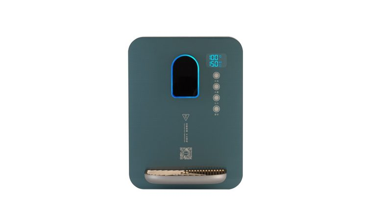
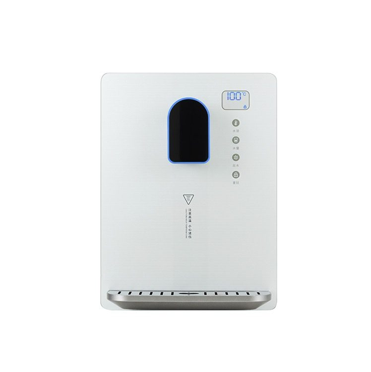
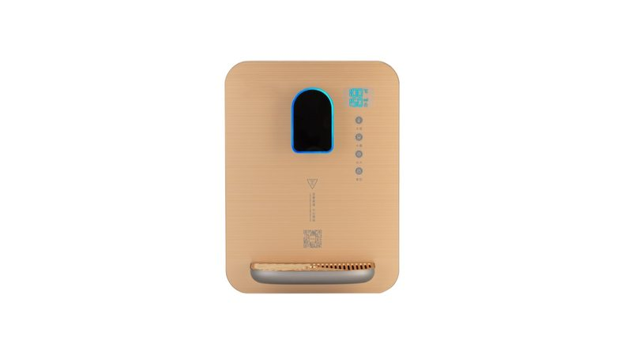
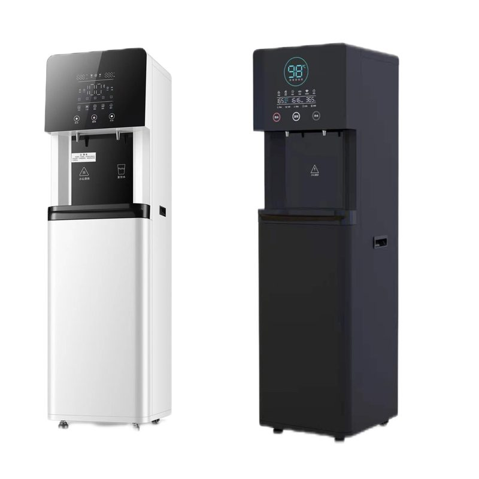
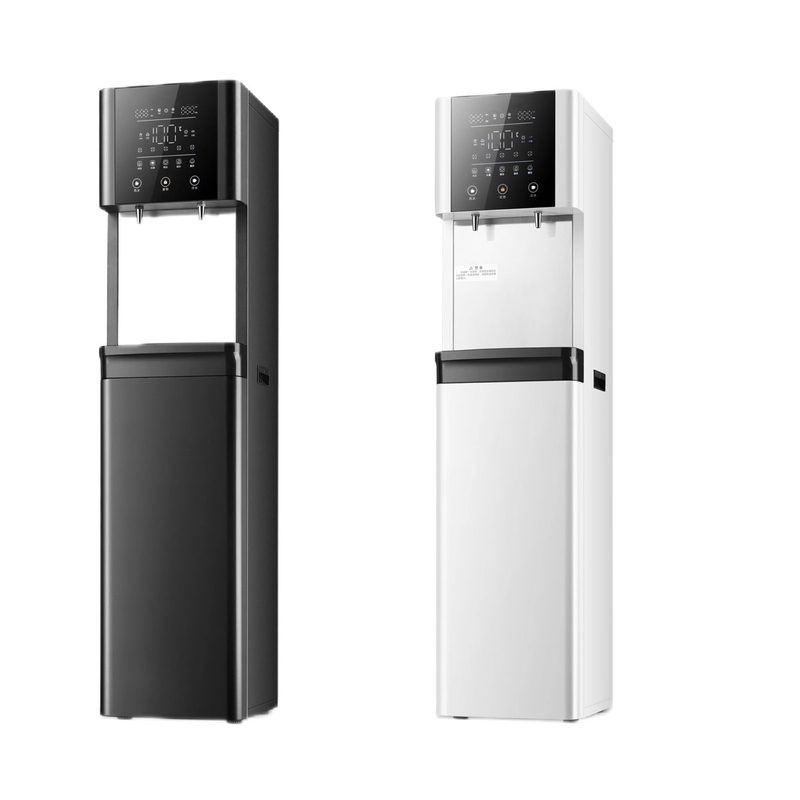

Dark Green Water Dispenser MT-600DG
Wall-mounted pipeline water dispenser with sleek modern design in unique dark green color. Saves floor space and provides continuo...
Zobacz Szczegóły →
Wall-mounted pipeline water dispenser with 2200W rated power and fast 3-second heating. Whole glass panel with matte spray plastic parts. Hurtowa dostawa fabryczna, możliwość dostosowania do OEM/ODM. Certyfikat NSF/ISO dla przemysłowego i komercyjnego uzdatniania wody. Wyprodukowano w naszym certyfikowanym zakładzie ISO 9001:2015 o powierzchni 20 000+ m² w Yuanhua Town, Haining City, Zhejiang, Chiny, ten produkt jest częścią naszej pełnej linii filtracji wody — niezależnie przetestowany zgodnie ze standardami NSF/ANSI 42 i 53 przez SGS, z oznakowaniem CE dla zgodności z importem europejskim i deklaracjami materiałowymi klasy FDA na życzenie. Dostępna jest personalizacja marki własnej OEM/ODM: drukowanie logo, niestandardowe formowanie zakończeń, dopasowanie kolorów i opakowań. Standardowe MOQ od 1000 sztuk; hurtownia FOB Szanghaj/Ningbo z warunkami płatności T/T 30/70 lub L/C za okazaniem. Obecnie eksportujemy do ponad 50 krajów, w tym do USA, Niemiec, Rosji, Arabii Saudyjskiej, Malezji, Indonezji i Brazylii, z pełnym certyfikatem halal.
| Heating Power | 420W – 1,000W (model dependent) |
|---|---|
| Cooling Power | 85W – 110W (model dependent) |
| Hot Water Temperature | 85°C – 95°C |
| Cold Water Temperature | 8°C – 12°C |
| Montaż | Wall-mounted / Vertical floor-standing / Desktop |
| Voltage | 110V/60Hz or 220V/50Hz (customizable for global markets) |
| Etapy filtracji | 5-stage RO + UF + post-mineralization (model dependent) |
| Wydajność dobowa | 75 GPD – 600 GPD |
| Certyfikaty | CE, RoHS, FCC, China 3C, NSF (filter elements), Halal |
| OEM/ODM | Color, panel UI, voltage, plug type, packaging — all customizable |
| Moc | 2200W |
| Hot Output | 3 seconds |
| Kolor | White Glass Panel |
| Etapy | 5 stages volume, 5 levels temp |
| Heating | 3 seconds instant heat |
| Colors | Golden, White, Dark Green, Black |
← Back to All Products Produkty

Wall-mounted pipeline water dispenser with sleek modern design in unique dark green color. Saves floor space and provides continuo...
Zobacz Szczegóły →
Wall-mounted pipeline water dispenser with 5 stages of water volume (150ml–850ml) and 5 levels of water temperature (25°C–100°C). ...
Zobacz Szczegóły →
High-power vertical water dispenser with 304 stainless steel tank and 1KW heating power. LED digital screen. Hurtowa dostawa fabry...
Zobacz Szczegóły →
Black & white dual-color wall-mounted pipeline water dispenser. Compact, energy-saving, with multi-stage water output. Hurtowa dos...
Zobacz Szczegóły →